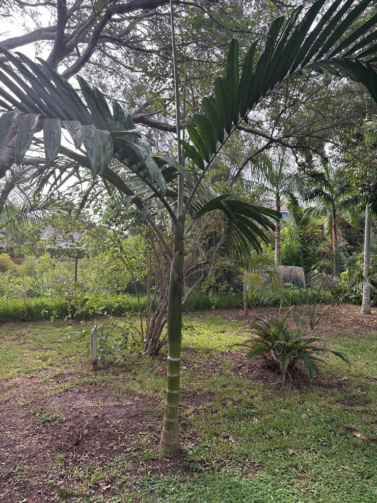

- This palm produces only two to three new fronds a year — but each one puts on a show. Every emerging leaf unfurls bright red, anywhere from deep burgundy to hot pink, before slowly greening over the course of one to two weeks. That fleeting flush of color is the reason for both its common name and its devoted following among palm collectors.
- The red is not just decorative. The color comes from anthocyanin pigments, which researchers believe act as a kind of built-in sunscreen, shielding the tender young leaf tissue from intense UV radiation while it is still too soft to protect itself with normal chlorophyll.
- The species epithet macrocarpa means 'large fruit' in Greek — and the name earns its keep. The ripe fruits are roughly egg-sized and turn a deep red, making them nearly as ornamental as the famous new leaves.
Chambeyronia macrocarpa is endemic to New Caledonia, a French territory in the southwest Pacific roughly 750 miles east of Australia. In the wild it grows in humid mountain rainforests, typically at elevations between about 2,000 and 3,000 feet, rooted in the island's volcanic and ultramafic soils.
New Caledonia is one of the world's great palm hotspots — the island harbors more than 30 native palm species, nearly all of them found nowhere else. Chambeyronia is one of two species in its genus, both endemic to the island.
The genus was formally described in 1873 by French botanist Eugène Vieillard, who named it in honor of Charles Marie-Léon Chambeyron, a French naval officer who helped map the New Caledonian coast and assisted Vieillard in collecting palms on the island.
In Florida it is grown as an ornamental specimen, valued for its architectural form and its spectacular new leaves. It performs well in the state's warmer zones, where it appreciates the heat and humidity, though it is sensitive to hard freezes and benefits from a sheltered position.
- The genus name encodes a specific historical debt: botanist Eugène Vieillard named Chambeyronia to honor Charles Marie-Léon Chambeyron, the French naval officer who mapped much of the New Caledonian coastline and helped Vieillard collect specimens from the island's interior forests.
- The species name macrocarpa comes from the Greek for 'large fruit' — a nod to the palm's unusually big, showy drupes.
- Although the red new-leaf trait is the plant's signature, the species is notably variable in cultivation. Leaflet width, crownshaft color, and the intensity of the red flush all differ from individual to individual. A green-leafed form exists that produces no red color at all on new growth, and a 'watermelon' variant is named for the yellow-green striping on its crownshaft.
- Formal botanical varieties have been described, primarily distinguished by crownshaft color.
- In its home rainforest, Chambeyronia macrocarpa grows as a canopy emergent, its crown poking above the surrounding forest — a position that likely explains the red-leaf biology.
- The anthocyanin pigments in the new frond are thought to serve as a chemical sunscreen, protecting immature leaf tissue from intense UV exposure in canopy gaps before the leaf has hardened enough to defend itself with chlorophyll alone.
Chambeyronia macrocarpa is monoecious — male and female flowers appear on the same inflorescence — so a single tree can set fruit without a nearby pollinator of the opposite sex. The branched inflorescences emerge below the crownshaft and attract visiting insects when in bloom. The large egg-sized fruits ripen to a deep red and are taken by birds, which distribute the seeds.
Because this is a non-native palm with no shared evolutionary history with Florida's fauna, it does not function as a larval host for local butterflies or moths, and its overall wildlife footprint in the landscape is modest compared to Florida native plantings. The fruit and flower are its primary offerings to local wildlife.
Branched inflorescences emerge from below the crownshaft. Each inflorescence bears both male and female flowers — small, cream-colored male flowers in triads alongside larger green female flowers — on the same tree, so a single palm can set fruit without cross-pollination. Flowering tends to occur during the warmer months.
Round to slightly oblong drupes, roughly egg-sized, that start green and ripen to a deep, showy red. Each contains a single seed. The fruit clusters are ornamental in their own right and hang just below the crownshaft. Fruit is not a food source.
Pinnately compound, arching, and reaching 8 to 12 feet in length. Leaflets are broad, thick, and leathery with a glossy surface — notably wider and heavier than most feather palms of comparable size. Fronds are arranged spirally on the trunk. The defining feature is the newly emerging frond, which unfurls a vivid red before greening over one to two weeks.
A prominent, slightly swollen crownshaft sits at the top of the trunk and is the point from which all fronds emerge; crownshaft color is variable across individuals, ranging from deep green to yellow-green with striation. The trunk is solitary, smooth, and attractively ringed with evenly spaced leaf-scar bands.
On younger and mid-aged specimens the trunk often passes through a streaky green-and-yellow camouflage phase before eventually settling into its final silver-gray form — a slow transformation that makes every trunk subtly one-of-a-kind. The trunk can reach roughly 10 inches in diameter at maturity.
Scan the crown immediately to see if the palm has recently broken its countdown — a single upright frond, still tightly furled or just beginning to open, blazing red or deep burgundy among the mature dark-green canopy is the showstopper.
If no new flush is active, examine the crownshaft: it is prominent, slightly swollen at the base, and often a rich green or yellow-green depending on the individual. Check for watermelon striping on the trunk itself — younger and mid-aged specimens often display a gorgeous streaky green-and-yellow camouflage pattern that slowly fades to silver-gray with age.
And if the palm is fruiting, look for clusters of large egg-sized red drupes hanging just below the crownshaft.
Unlike the true Sago Palm — a cycad (Cycas revoluta) notorious in Florida for being lethally toxic to dogs and cats — this is a genuine palm (family Arecaceae) and is considered non-toxic to people, dogs, and cats. If you are walking a pet through the park and want peace of mind, this is one to feel good about. The large fruit is not a food source — the flesh is minimal — but it is not harmful.
The broad, leathery fronds are heavy when they fall and the leaf edges can cause minor abrasion, so gloves are worth wearing when pruning old growth; otherwise harmless — people just don't eat it.
Several named variants of Chambeyronia macrocarpa exist, distinguished primarily by crownshaft and trunk coloration. The so-called 'watermelon' variant tells its story over time: as the trunk matures it passes through a gorgeous streaky green-and-yellow camouflage phase — vivid and eye-catching — before slowly settling into a final silver-gray.
It is less a fixed trait than an evolving one, which means no two specimens look quite the same at any given moment.
The var. flavopicta has a distinctly yellow crownshaft and petioles, and a rare 'green form' produces no red coloration in new leaves at all. All variants are the same species and share the same care requirements.


- © Randall Carter (CC-BY-NC), via iNaturalist